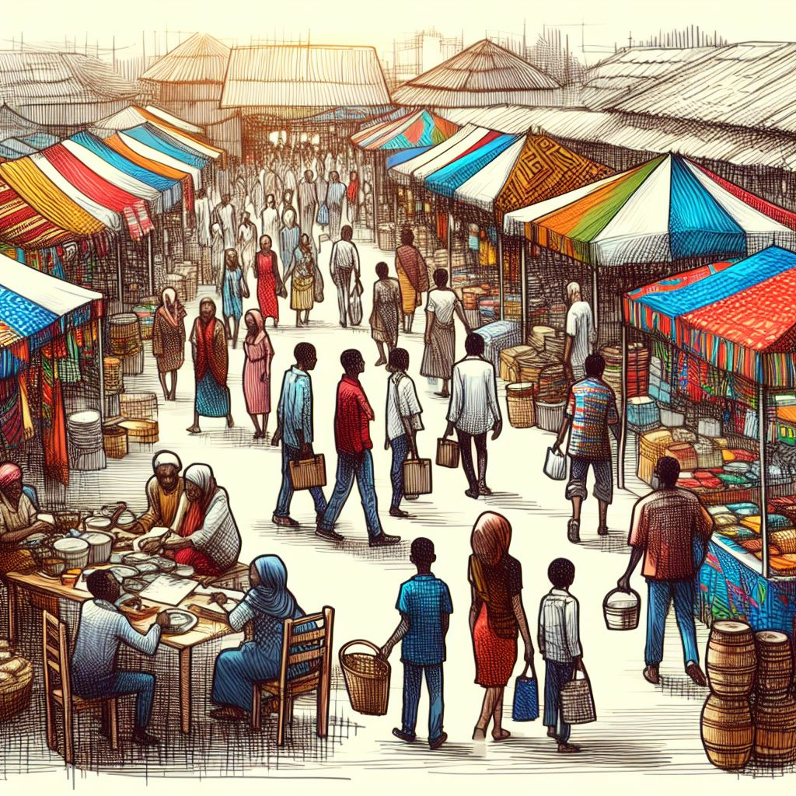
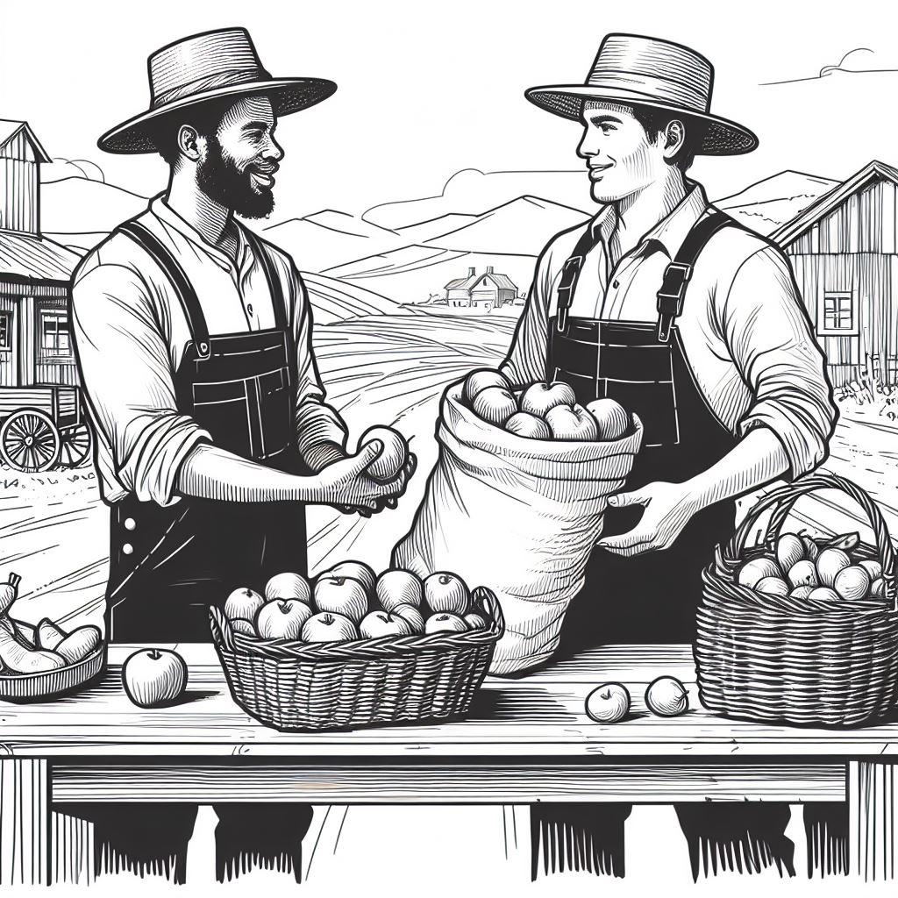
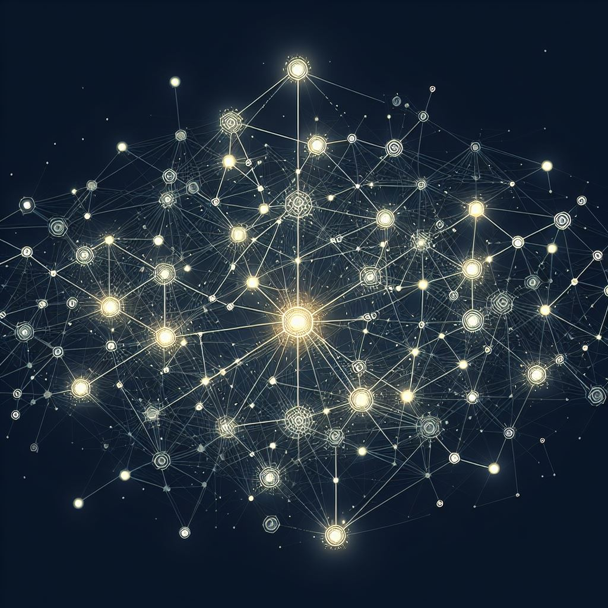
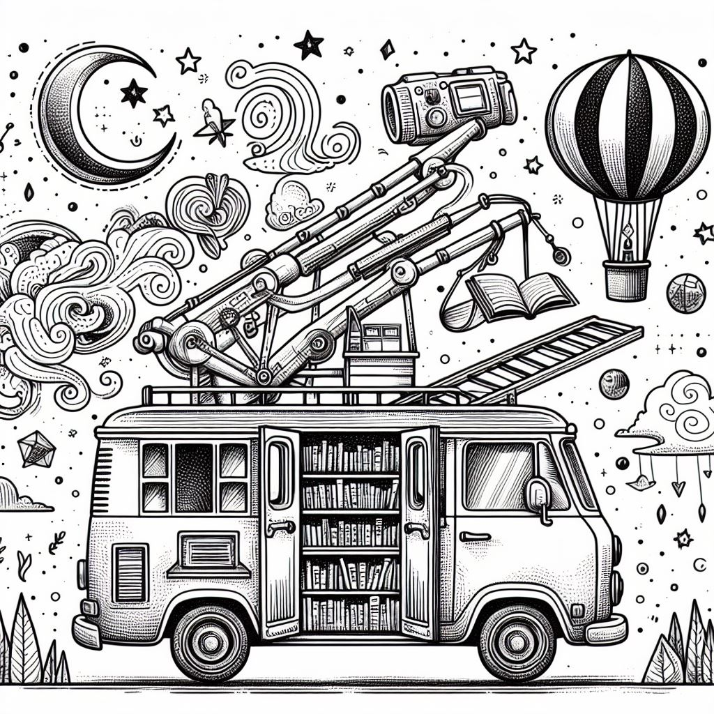

THIS PAGE IS A WORK IN PROGRESS
A Plan That Cannot Fail
Our network does not require any outside
influence to flourish and grow.
Like a hydra, one head can be chopped off
and more will grow.
Neither will economic downturn affect our
network.
For it is built on ideas, not bets against
a dying system.
The likelihood of a proposal’s success or
failure lies in its definition and terms. Because
the network is a system of ideas that can be
recreated by anyone who has heard the methodology,
our proposal is one that requires no money and no
one person or group to bring it through to
completion. All that is needed is a simple
redirection of attention and resources away from
what is unsavory and towards a network that will
truly provide for us.
An idea cannot fail when its success does not rely
on monetary achievement, any one person attaining
notoriety for a project, or the first iteration of
the project to see the goal to completion.
Different projects have failed due to definition
alone. If the definition of success is that one
location persists or that one group of people
survives, the plan is not great enough.
Anyone in the next 100 years could find this set
of instructions and re-create what we are doing
now. But there will be no need to start from
scratch. As soon as the number of people are
proliferating the ideas contained herein, there
will be more aversions and more resiliency because
of them. We do not need to be attributed to the
version that succeeds. We will always only be one
group who saw what was possible. I made sure to
write down our ideas as we lived them out.
Your work should be designed so that you want it
to be stolen. Through replication grows notoriety.
More people exposed means more people knowing it
exists at all. If one person's desire for
recognition, for ownership of an idea, an entire
project can fail to launch. Our plan is, among
other things, to spread to all people the
recognition of what is possible and what is
lacking in the current narrative. This will make
it easier to take responsibility for ones own
narrative outlook that they ultimately share with
the world.
This is the workbook for how the world succeeds
when enough of us choose to do so.
Join us in our journey to defund the state
through counter-economics.
We don’t need to convert anyone to our
cause. There are enough people already comitted
to liberty. All we need is to provide all those
liberty-loving people more opportunities to work
together so that all of their wealth and time
can be channeled into more wealth for them.
We can all imagine ways that a limited number of
people could take down the beast. For example, if
all liberty minded individuals refused to pay
taxes, and it became a well known movement, then
there is a good probability that the news would
become viral and enough people would join in this
endeavor to defund the governemnt. There are also
easy ideas for how to operate as a society beyond
this defunding - coordinating with your friends
and neighbors to show up as a group to the scene
of a dispute or incident is a great example. This
is also the concept of militia. Strong ubiquitous
self-defense is how we will defend ourselves
against foreign or domestic threats. We are
providing and helping to provide whatever extra
support systems are needed to get the solution
going and to normalize the conversations around
the new lexicon of reality and the idea of having
no overarching government.
We want the option of freedom for all. Coersion is
something that affects all aspects of our lives.
We can run away into the woods and wait for the
laws and society to come out and reach us there,
or we can take actions to make sure the larger
social structure in which we exist becomes less
coersive to us over time. If your plan
doesn’t bring more freedom to the greater
world you live within as well as to your private
world, you are not on the wrong path; but we want
to help expand your personal vision so that you
can coexist in a network with other like-minded
individuals. We are adding resources and
connecting people to resources that aren’t
easily attainable in this current world. We
believe it is easy to add a truly altruistic
component to freedom when an option is offered
that is competitive and readily available. For too
long we have been oppressed by a government that
does not serve us.
All of us have questions such as: Why can’t
my loved ones find a community that provides for
them instead of depleting them? Why can’t we
find affordable local food that doesn’t fund
the state? We have the answers for these
questions. The State itself is unnecessary, and
without it, we would be able to live as makes
sense.
Many have the option to move out of the toxic
cities, get food from local sources, and protect
themselves far beyond the usual defenses such as
pepper spray and a cell phone. However, some
can’t leave the statist parts of their lives
as easily based on personal or family health
conditions, child custody issues, or other
obligations. This will not always be the case,
however. There will be agorist solutions to all of
these issues. The more resilient and fail-proof
our networks are, the harder it will be for those
in control to restrict our actions. There will be
more and more options available and nobody can
predict how amazing it will turn out.
Government should be optional, not required. We
are FREE people, are we not? We aren’t
trying to abolish the State. If there are people
who still wish to use a State for provision of
specific goods or services, they should still be
free to contract in such ways, but again, they in
the NEW realm will enter into such contracts
voluntarily and with the free-will choice to say
no without punishment or retaliation.
The idea is to help everyone who is having trouble
redirecting their income stream and expenditures
to purely agorist sources - so that we can keep
the wealth in the family and grow a system that
will stand resolute against all threats.
We know this will work and we want to help form
and strengthen the bonds that will replace weak
supply lines currently “providing” for
us. The necessity of the State is the story we
tell ourselves. We can get everyone we know to
stop telling that story. We are building a network
of capable people who can protect each other and
the world. We are on voluntary teams that work
outside of the government.
We have a business model that cannot fail. The
value people are already generating can be
redirected towards the agorist network and thus go
much further towards true growth and prosperity.
This enables a lifestyle maximized for
freedom.
All interactions we take part in are in a free and
sovereign world. We are taking all transactions
out of the city. We are making sure the money we
spend goes towards a system that will protect us,
not towards a system that will hurt us. So every
interaction should be taken from the
government/taxes and utilized by only
voluntaryists who are making the new world.
We are creating spaces that you can live in free
of charge so that you can detox for as long as you
need. Our network provides a means of achieving
whatever life goals you have in a way that
doesn’t fund wars but actually helps others
gain security. You will see the way in which you
can finally align yourself with the way you are
acting out your own real-life adventure. We have a
way to help you expand your impact on those you
care about while reducing your risk and the risk
of those you do business with. With our network,
you have the prospect of real security, wealth,
privacy, and community. On top of all of this, you
will witness the structure of the world change
based on your input.
When you see what is really possible in this
moment, in this lifetime, you will see the value
of embarking on your own journey in the Realm. All
it takes is spreading this knowledge to the people
who will want to do something about it and create
the change they want to see.
The knowledge of our slavery is hardly as
important as the knowledge of our power and all
the tools and manpower that we already have at our
disposal to fight back against tyrants through
nonviolent, non-confrontational means.
Agora: n. Open spaces.
-
An assembly; hence, the place of assembly,
esp. the market place, in an ancient Greek
city.
- A place for gathering.
To us, agorism is where all actions lead towards
bringing down the state (the biggest current
threat to freedom) by illegitimizing its
involuntary strategies through counter-economics.
This can happen as quickly as we make it happen.
The scope of what is possible in the next 1-10
years is what has been lacking in most of the
freedom spaces we have seen.
Agorism as we see it is a strategy one can employ
in order to fight, reduce, or obsolete the state
through counter-economics. To align ideologically
with agorism does not make one an agorist. Agorism
acknowledges that there is an economic war between
free markets and State-controlled and extorted
markets. By your lifestyle, actions, career, and
economic choices, you choose which side of that
war you stand on.
Animal rights aside, it is more ethical to consume
agorist beef than it is to consume organic vegan
produce that you bought at a grocery store if you
look at all the taxes that were extorted through
the life of the product. The only murder you are
funding was of one cow who you could verify was
treated well vs. the exploitation of everyone
(including murder and death of innocents) when you
buy groceries. The focus that will bring us
together and sustain us is around how you choose
the outer network you are supporting. But when the
goods and services offered in the network are too
expensive, it can’t get going nor remain
sustainable or accessible to its
“affiliates”.
Most important for all members of the network is
the understanding of how things are when there are
no government restrictions, only private people
handling their own business. They have to
understand that the problem is not with one thing
or another, it's not with the language but with
the story itself.
Why don’t we write plans in which we are the
number one hero of our own life, pursuing our
wildest fantasies? It’s not our fault - we
are tricked. We are told we will be persecuted by
the government if we pursue means that give us the
freedom to flourish and grow resilient networks.
Instead, each person is living in an isolated node
of a largely directionless network of people,
unable to offer even their own eyes as backup to a
network they actually would benefit from
supporting. We have to create a new option. The
option where people choose for themselves.

If you could choose how many sources you wanted
when it came to organic produce, it might be easy
to imagine paring it down to a handful of local
farms for your groceries - but if it came down to
choosing a police force that would either protect
you in a time of need or potentially take you to a
cage for any number of reasons whenever they
encounter you, having another option can be a
matter of life or death.
Why don’t we have more choices when it comes
to the protection agencies we fund and are subject
to in our own spaces? That is a whole other
discussion but the answer to meeting the needs of
society is a free market where consumers are
allowed to choose the services they want to
subscribe to and the agencies they want to be
involved in. That market is something each of us
have the fortune of securing in this time and for
generations to come.

Your “Network” is a physical
manifestation of your interactions. Interactions
with intention can result in networks with
intention, and the clusters and groups of
individuals that result therefrom.
Your network already exists. Now, identify your
trusted “subnet”, or network of
individuals you have established trust with, who
share your intention and objective of creating a
more free world for themselves and others, and
whom you have established sufficient moral and/or
ethical common ground with. If they are a
potential threat to you or yours, confront them
about it and establish healthy boundaries with
them. If they do not respect your boundaries, do
not consider them a part of your trusted subnet.
Essentially, we are advocating individuals
establish decentralized (enclaves), both localized
and dispersed, aimed at making freedom more
accessible for others. This guide will go into
detail about how networks will solve the issue of
scaling up from small communities to places that
have larger populations.

One of the easiest ways to create more wealth is
to make sure your expenditures are not going
toward taxes. When you give your time and
resources to another in a voluntary exchange, give
to those who seek to concentrate their wealth into
a network that focuses on manifesting freedom
beyond itself. Is the person you're selling your
goods/services to an anarchist who is actively
seeking to manifest freedom for others? Or are you
giving your fruits away to be funneled/fed back
into the statist paradigm/system? Vote with your
wealth. Let your wealth work for you toward what
you're here to accomplish: the abolishment of
slavery and freedom of humanity.
Voluntaryists adhere to a philosophy based on the
idea that all human interactions should be
voluntary. If you take those ideas to their
conclusion, you are an anarchist. The world we
envision includes voluntary relations between
equals, rather than between rulers and subjects.
Anarchy is about individuals deciding for
themselves how they will interact with the world.
This does not mean they will be able to oppress or
aggress upon others without repercussions.
Voluntaryism is Anarchy because property rights
and self-ownership are immutable but do not ever
necessitate coercion or force such as telling
others what they can and can’t do with their
property. In the current system, do you feel like
you have control? In a voluntaryist world, there
is no legal way to aggress against others, and you
are free to determine the ‘rules’ over
your own property.
We define evil as the destruction of freedom. A
choice for the lesser of two evils is still a
choice for evil and will always result in evil.
You never have to choose evil. Just like the
trajectory of all evil is more evil, the
trajectory of all tyrants, both big and small, is
more tyranny. The ends don’t justify the
means. The means and the end are the same. Freedom
must be taken.

Decisions are best made by the people who are
affected by a decision. There are no “one
size fits all” solutions that work best for
most people. Such “solutions” are
usually only made possible through compulsion. The
best solution for everyone seeking a voluntary and
peaceful world is to resist and refuse
involuntary, compulsive strategies while being
tolerant and supportive (or at the very least not
opposed to) societies consisting of only
pluralities of competing voluntary peaceful
offerings and solutions to meet the needs of
individuals.

Most of us are already Voluntaryists and we all
already live in a state of anarchy. We live in
anarchy now. We define having
“authority” as having power over and
the right to exercise that power over someone or
something. There is no such thing as authority
beyond the self because no one has the right to
exercise their will against another’s will.
We are free to act as we like. The game of rulers
and subjects is just a story we tell ourselves. We
are hindered by the people called the police force
(see our section on voluntary means of
defense).
We can become more free from government bullying
by building alternate networks of free people.
“Government/the state” is the
belief that some people can possess authority
(power and the right to exercise it) over other
people. The belief that some of us are rulers
while the rest of us are subjects and must obey is
a story people tell themselves. Some people stand
up and defy tyrants. Luckily, resisting tyranny
does not require violence or aggression.
We are providing opportunities and options so that
people don’t have to seek services that the
proceeds from are going towards the government and
people who also drain their resources to the
government; granting them lesser autonomy
and the perpetuation of the under-supplied
agorist market.
The moral philosophy of voluntaryism is not
required to posit a working solution for how the
world would look without a government as that will
be created organically by those involved. Still,
there are many resources on times past and present
where anarchy has existed or exists.

Come with us! We will help all of your wildest
dreams come true.
It doesn’t matter where you are or how
you live...
You can take action to become more Agorist
without compromising your ideals and
goals.
If you have a job, any job, you can do it for
the network.
If you have a dream, you can dream it better
without the current restrictions.
You don’t need money to make something
survive. You need an idea.
Any action can be a good expenditure of time, but
the person acting has to be self-aware of the
action’s context in the larger community.
Most actions can be done in a way that leads
toward the freedom we all seek.
In order to achieve anarchy, enough
individuals must choose a lifestyle that makes
freedom a more comfortable and easy choice for
others while avoiding choices that perpetuate
self-enslavement by making it easier or more
comfortable for people to continue making
lifestyle and purchasing decisions that perpetuate
the continued existence of the State. No business
built, family established, or garden tended will
make the world more free if those things are not
also done with the intention of making the choice
of freedom for others more appealing than the
“statist-quo”.
The world today is not designed to make your path
to freedom from government accessible, but rather
to make the choice to surrender your freedom as
easy and comfortable as possible. It is filled
with institutions and ideologies designed to make
freedom seem impossible in this lifetime and to
make your time and wealth exploitable by people
who thrive on your continued lack of freedom and
lack of hope for such. Thinking that it's
impossible to achieve freedom. Our job as
freedom-bringers is to make the agorist path the
path of least resistance for others. That is,
freedom-bringers must create a world where freedom
from taxation and regulation is as accessible as
possible to others.
Each individual can design their life to live with
intention toward the maximization of freedom in
this lifetime. This website aims to explore and
facilitate various ways of life that will bring us
as close as possible to anarchy in this lifetime.